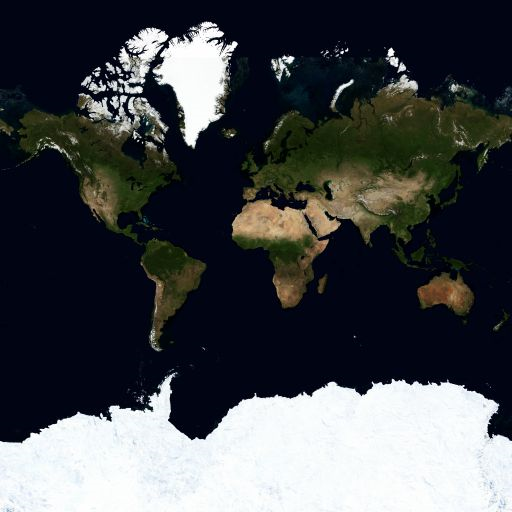
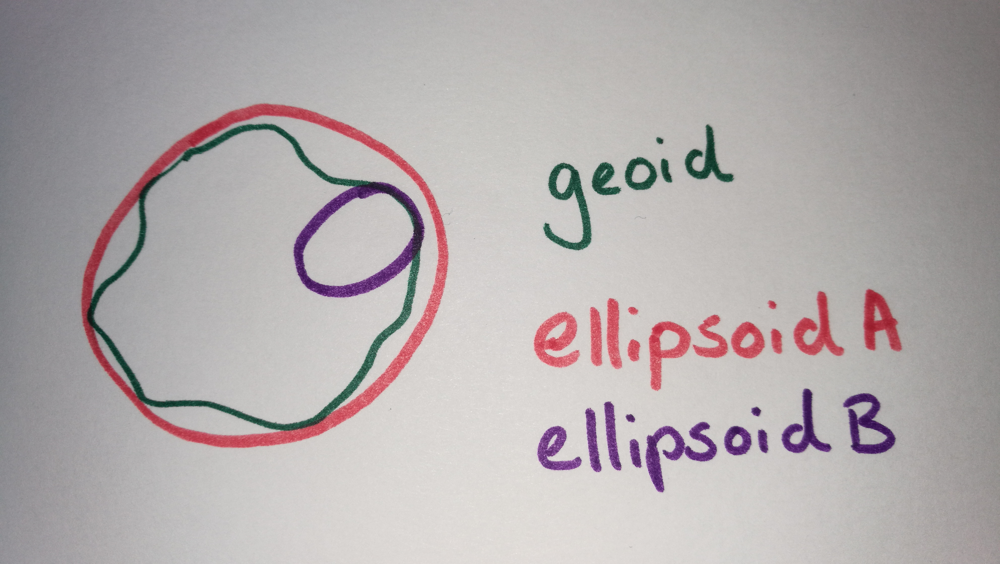
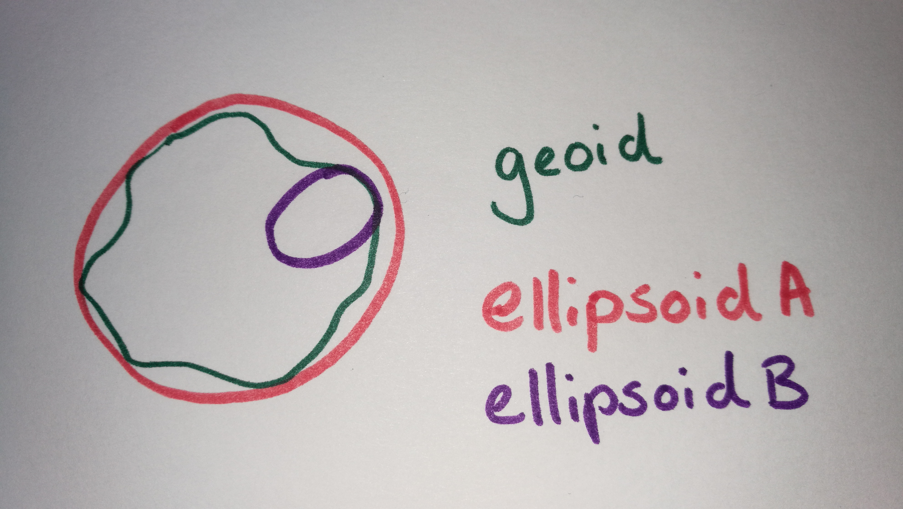

Geo Visualizations for the Web
.. beyond Google Maps ..
Niene Boeijen
nieneb.github.io/codamx
I am a web cartographer
I make maps
online
interactive
Back-end to front-end
Implement all through code
Niene Boeijen


Propedeuse Art Academy
MSc Geo Information Science
Internship Geo Web Visualization
Maptime Amsterdam & Utrecht
Web Cartographer
Utrecht, the Netherlands
We make interactive maps & geo data visualizations
Our expertise is open {source; data; standards}
We combine cartography with web technology
NieneB.nl


Let's talk maps!
"Everything is related to everything else, but near things are more related than distant things"Tobler's first law of geography
Power of Maps
Our brains organize by location .. why so many relate to maps and geography is that we have no choice but to think and see spatially.
Power of Maps
Maps make sense of things
Maps lend order to complex environments
Reveal patterns and relationships
Map = Collection of Geo data
What is geo data?
geo data = data + location


Maps allow us to communicate about location using a
common framework
Coordinate system
Communicate locations & distances on the Earth's surface

Shape of the earth?

The real shape of the earth is too complex to be useful as a reference for measurement..
Geographic coordinate system

3D model
Longitude Latitude
Geographic Coordinate System:
WGS84 EPSG:4326
Lon Lat in decimal degrees
GPS
Standard way to store most geodata for the Web:
{
"type": "Feature",
"geometry": {
"type": "Point",
"coordinates": [5.2394137,52.0819662]
},
"properties": {
"name": "Hotel Theater Figi"
}
}Projected coordinate system

Mathematical projection / translation
2D
Projected Coordinate System:

Projected Coordinate System:
Spherical/Web Mercator EPSG:3857
Square, scale not relevant, shapes important
We store data in EPSG:4326, but display it in EPSG:3857!
Why is Mercator wrong?

Projected Coordinate System:
RD New EPSG:28992
Netherlands!
 


Reading materials:
Getting my map to the web?

| Analogue paper maps | Digital maps | Web Maps |
|---|---|---|
| Data | Tiles, styles and servers | |
| On the computer | View in a browser | |
| Hold and fold | Calculate, analyze | Scroll, pan, zoom |

What kind of map?
- Static & Dynamic map
- Web GIS application with analytical tools
- Animated, real time, data driven
- Download
- Infographic, image, video, gif
user driven or maker driven?

Open Geospatial Consortium - OGC standards
- WMS Web Map Service
- WMTS Web Map Tile Service
- WFS Web Feature Service
Defacto - Community standard
- Google/OSM (XYZ)
- TMS Tile Map Service
- QuadTrees (microsoft)
Tiled web map
google.com/maps
openstreetmap.org
a little History
Digital maps
GIS software
GIS on the Web is not user friendly..
1996 Mapquest first with a web service!

But really slow to load..,
in 2004 Endoxon found a way for quick online mapping!
2005 Google Maps took over!
The solution?
Tiles!
Tiles
All tiles size 256x256 pixels
Placed in a grid, sharing boundaries
Seamless map
Slippy maps, Google/OSM (XYZ) - TMS - QuadTrees (Microsoft)
All these little tiles load way faster than one big map!
Zoom levels
Each zoom level has its own set of tiles!
Zoom level 0: 1 tile for the whole world.
Increases exponentially...
Zoom level 1: 4 tiles
Zoom level 2: 16 tiles
etc.
 Map with tile
bounds
Map with tile
bounds

Serving tiles
Tiles are just images on the web
http://tile.openstreetmap.org/5/16/10.png
{kind=link}
/z/x/y
https://{s}.tile.osm.org/{z}/{x}/{y}.png

Tiles are styled and rendered in advance

Styling tiles
styling per zoom level
Lot's and lot's of geo data!
country_bounds
xxx
center-line
#0000ff
Disadvantages Raster Tiles
No interaction with objects
No information available about objects
Multiple visualizations = multiple tile sets
Vector Tiles
the newest technology!
From Raster to Vector

Vector Tile

Arrays in a 256 x 256 matrix
Same tiling schema as Raster png tiles.
Binary format
No colours
Simplifies geometries

Advantages Vector tiles
Rendering is done on client side
Custom styles on client side
Small tile size. Fast
High resolution.
Direct access to feature information.
WebGL
the rendering happens in your browser with the help of your device's graphics processing unit (GPU).
+ rotating and tilting the map (3D)
+ smooth/infinite zooming
WebGL is widely supported in modern browsers

raster tiles

vector tiles

style.json
{
"version": 8,
"name": "Mijn eigen Stijl",
"sprite": "url",
"glyphs": "url/{fontstack}/{range}.pbf",
"sources": {...},
"layers": [
{
"id": "background",
"type": "background",
"paint": { "background-color":"#FFFFFF" }
},
{...}
]
}
Interactivity with JavaScript!
( ^ this is CSS )


Alright. Fun.
"But I can't read those labels! Where are my reading glasses?"
To the front-end!
JavaScript
puts it all togehter
tiles, content, interaction

a map is a lot!
- Map Interface and Interaction
- Zoom, panning, clicking etc.
- Map events
- popups markers
- Tiles (raster/vector) as Base Layer
- Additional Data
- File (GeoJSON)
- WMS,WFS
- Tiles
JavaScript Libraries for Mapping
When to use what?!

D3.js for data driven info graphics
Turf.js for geospatial computation in the browser
Leaflet.js for simple light weight raster web maps
OpenLayers for more elaborate raster web map with more functionality
ArcGIS Javascript API if your client uses ESRI software
MapboxGL.js for vector tiles
Tangram for vector tiles
CARTO and Mapbox for cloud solutions
HERE Maps and Google Maps API for navigation, google services and commercial goals
Main considerations
Open source vs closed source
Mobile vs desktop
Raster vs Vector
Amount of Interactivity or GIS functionality
Amount of data to show
Let's look at:
Leaflet for Raster tile maps
MapboxGL.js for Vector Tile maps
D3.js for static maps
Leaflet.js
An Open-Source JavaScript Library for Mobile-Friendly Interactive Maps
simplicity, performance and usability
Developed by: Vladimir Agafonkin.
Weighing about 38 KB of JS.
Has all the mapping features most developers ever need.
Can be extended with Plugins
Well documented
What Leaflet does not do:
Provide data for you.
Provide the basemap.
Its not GIS
Leaflet is a framework
Layers
Base Layer
Raster

Data Layer / Feature Layer
Vector

Raster tile base map providers
let map = L.map('map').setView([51.505, -0.09], 13);
L.tileLayer('http://{s}.tile.osm.org/{z}/{x}/{y}.png', {
attribution: '© OpenStreetMap contributors'
}).addTo(map);
Adding data layers
WMS, WFS (slow)
GeoJSON
let marker = L.marker([52.372825, 4.900321]).addTo(map);
// ADD a WMS layer
let cbs = L.tileLayer.wms('https://geodata.nationaalgeoregister.nl/wijkenbuurten2018/wms', {
'layers': 'cbs_buurten_2018',
'styles': 'wijkenbuurten2018:wijkenbuurten_thema_buurten_gemeentewijkbuurt_percentage_eenpersoonshuishoudens',
'srs': 'EPSG:28992',
'format': 'image/png',
'transparent': true,
'opacity': 0.5
}).addTo(map);
Projections
Use EPSG:28992 > Government in Netherlands obliged to use it!
MapboxGL.js
Developed by:

mapboxgl.accessToken = 'yourowntoken';
var map = new mapboxgl.Map({
container: 'map-container',
style: 'style.json',
hash: true,
zoom: 11,
pitch: 60,
bearing: 62.4,
center: [ 4.8, 52.4]
});
style.json
{
"version": 8,
"name": "Mijn eigen Stijl",
"sprite": "url",
"glyphs": "url/{fontstack}/{range}.pbf",
"sources": {...},
"layers": [
{
"id": "background",
"type": "background",
"paint": { "background-color":"#FFFFFF" }
},
{...}
]
}
Layers or layers ???
Source
Data layers in tile
Style layer
Leaflet every source is a layer


Vector Tile providers
- Mapbox
- Maptiler
- OpenZoomStack
- ESRI
- Cartiqo
- PDOK? ..
Use MapboxGL.js for
Customized background maps
Interactive data
WebGL rendering
D3.js
Data Driven Documents
A JavaScript library for manipulating documents based on data
D3 helps you bring data to life using HTML, SVG, and CSS.
Developed by Mike Bostock
Allows you to bind data to the DOM and apply data-driven transformations to the document
HTML, SVG, and CSS
Fast
supports large datasets
Dynamic, interaction, animation
SVG
Text-based, mathematical representation of an image.
Vector Graphics
Can be searched, indexed, scripted, and compressed!

D3 is NOT
a slippy map creator
Not based on tiles!!
Mostly used for:
Charts (pie, line), Tables, Maps, Networks, animation & interactivity
Use D3.js for
Interactive graphic map representations
Different coordinate systems and projections
From real-world to screen coordinates
d3.geoPath
Examples
galleryFeel like trying? >>
github.com/NieneB/webmapping_for_developers
github.com/NieneB/webmapping_for_beginners_v2
Maps are everywhere these days...

"There has never been more open data available than at this moment in time, and everyone from global NGOs to armchair hobbyists are using that data to create maps. "
Vibrant. Dynamic. Responsive. Intelligent. We no longer have the static images, the paper-under-glass we used to have. Instead, today’s maps feel like living, breathing things – highlighting everything related to our taps and inputs, and dimming and de-emphasizing everything that isn’t.
the age of the autonomous vehicle
"The realization of the interactive map as an experience, not just a map design."
New techniques = new challenges
the cartographer
the developer
Web Mapping
More then design
- speed and scalability
- Data-driven
- Responsive designs
- Personalised

The Universal Map
How long until most of the world is using the same map?
the Universial map - Justin oBeirne
Cartography is the new code.

Cartography is not a niche anymore it has become main stream
- Big data
- Mass consumption
- Open source software
- Open data
skills
You need to be able to find, manipulate, and store spatial and non-spatial data.
You need to be able to design a functional and attractive cartographic representation of that data as well as the UI controls to operate it.
You need to be able to implement that design through code.
Challenge
For cartographers to code. Data driven, user interactivity
For developers to design a good map, think spatial
All maps lie!
".. maps can visualize a lot of data quickly and effectively. But they can also visualize a lot of data inaccurately and misleadingly."
Citylab - when maps lie
Power of Beautiful maps
They stimulate both sides of our brain: the right side that’s intuitive and aesthetic, and the left side that’s rational and analytical. Maps are this wonderful combination of both.
Easy visual mistakes ..
Choropleth map, be carefull..
regions with bigger sizes tend to have a bigger weight in the map interpretation
No absolute numbers, normalize your data
Carefull with the color scale

No more heatmaps!
yes.. they look fancy but do not always show you the data..

Presentation: Stop using heatmaps to discover spatial patterns
Wrong classification


Tooo much data..

Coordinate precision

"IF you torture the data long enough, it will confess to anything."
Ronald Coase
Cartography is inherently an instrument of power
Make your map carefully
The future .. Are maps necessary?

Cartography in the Age of Autonomous Vehicles - Justin oBerine Are maps necessary? - Nicholas Carr
Are we there yet?

People just love good maps

and I love to make them!
Thank you!
Questions ?
Stay in touch!
| niene@webmapper.net |
| @BNiene |
| NieneB |
| NieneB.nl |
| Niene Boeijen |
| volvo_343_dl_1980 |